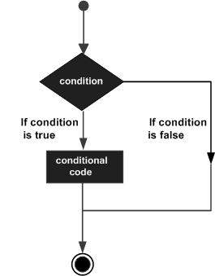

Perl 条件语句
Perl 条件语句是通过一条或多条语句的执行结果（True或者False）来决定执行的代码块。
可以通过下图来简单了解条件语句的执行过程:

注意，数字 0, 字符串 '0' 、 "" , 空 list () , 和 undef 为 false ，其他值均为 true。 true 前面使用 ! 或 not则返回 false。
Perl 提供了下拉的条件语句：
| 语句 | 描述 |
|---|---|
| 一个 if 语句 由一个布尔表达式后跟一个或多个语句组成。 | |
| 一个 if 语句 后可跟一个可选的 else 语句，else 语句在布尔表达式为假时执行。 | |
| 您可以在一个 if 语句后可跟一个可选的 elsif 语句，然后再跟另一个 else 语句。 | |
| 一个 unless 语句 由一个布尔表达式后跟一个或多个语句组成。 | |
| 一个 unless 语句 后可跟一个可选的 else 语句。 | |
| 一个 unless 语句 后可跟一个可选的 elsif 语句，然后再跟另一个 else 语句。 | |
| 在最新版本的 Perl 中，我们可以使用 switch 语句。它根据不同的值执行对应的代码块。 |
IF 语句
Perl if 语句由一个布尔表达式后跟一个或多个语句组成。
语法
语法格式如下所示：
if(boolean_expression){ # 在布尔表达式 boolean_expression 为 true 执行 }
如果布尔表达式 boolean_expression为 true，则 if 语句内的代码块将被执行。如果布尔表达式为 false，则 if 语句结束后的第一组代码（闭括号后）将被执行。
流程图

实例
执行以上程序，输出结果为：
IF...ELSE 语句
一个 if 语句 后可跟一个可选的 else 语句，else 语句在布尔表达式为 false 时执行。
语法
语法格式如下所示：
if(boolean_expression){ # 在布尔表达式 boolean_expression 为 true 执行 }else{ # 在布尔表达式 boolean_expression 为 false 执行 }
如果布尔表达式 boolean_expression 为 true，则执行 if 块内的代码。如果布尔表达式为 false，则执行 else 块内的代码。
流程图

实例
执行以上程序，输出结果为：
IF...ELSIF...ELSE 语句
一个 if 语句后可跟一个可选的 elsif 语句，然后再跟另一个 else 语句。
这种条件判断语句在多个条件的情况下非常有用。
在使用 if , elsif , else 语句时你需要注意以下几点。
if 语句后可以跟上 0 个 或 1 个 else 语句，但是 elsif 后面必须有 else 语句。
if 语句后可以跟上 0 个 或 1 个 elsif 语句，但它们必须写在 else 语句前。
如果其中的一个 elsif 执行成功，其他的 elsif 和 else 将不再被执行。
语法
语法格式如下所示：
if(boolean_expression 1){ # 在布尔表达式 boolean_expression 1 为 true 执行 } elsif( boolean_expression 2){ # 在布尔表达式 boolean_expression 2 为 true 执行 } elsif( boolean_expression 3){ # 在布尔表达式 boolean_expression 3 为 true 执行 } else{ # 布尔表达式的条件都为 false 时执行 }
实例
执行以上程序，输出结果为：
UNLESS 语句
一个 unless 语句由一个布尔表达式后跟一个或多个语句组成。
语法
语法格式如下所示：
unless(boolean_expression){ # 在布尔表达式 boolean_expression 为 false 执行 }
如果布尔表达式 boolean_expression为 false，则 if 语句内的代码块将被执行。如果布尔表达式为 true，则 if 语句结束后的第一组代码（闭括号后）将被执行。
流程图
实例
执行以上程序，输出结果为：
UNLESS...ELSE 语句
一个 unless 语句 后可跟一个可选的 else 语句，else 语句在布尔表达式为 true 时执行。
语法
语法格式如下所示：
unless(boolean_expression){ # 在布尔表达式 boolean_expression 为 false 执行 }else{ # 在布尔表达式 boolean_expression 为 true 执行 }
如果布尔表达式 boolean_expression 为 false，则执行 unless 块内的代码。如果布尔表达式为 true，则执行 else 块内的代码。
流程图
实例
执行以上程序，输出结果为：
UNLESS...ELSIF...ELSE 语句
一个 unless 语句后可跟一个可选的 elsif 语句，然后再跟另一个 else 语句。
这种条件判断语句在多个条件的情况下非常有用。
在使用 unless , elsif , else 语句时你需要注意以下几点。
unless 语句后可以跟上 0 个 或 1 个 else 语句，但是 elsif 后面必须有 else 语句。
unless 语句后可以跟上 0 个 或 1 个 elsif 语句，但它们必须写在 else 语句前。
如果其中的一个 elsif 执行成功，其他的 elsif 和 else 将不再被执行。
语法
语法格式如下所示：
unless(boolean_expression 1){ # 在布尔表达式 boolean_expression 1 为 false 执行 } elsif( boolean_expression 2){ # 在布尔表达式 boolean_expression 2 为 true 执行 } elsif( boolean_expression 3){ # 在布尔表达式 boolean_expression 3 为 true 执行 } else{ # 没有条件匹配时执行 }
实例
执行以上程序，输出结果为：
三元运算符 ? :
我们可以使用 条件运算 ? : 来简化 if...else 语句的操作。通常格式为：
Exp1 ? Exp2 : Exp3;
如果 Exp1 表达式为 true ，则返回 Exp2 表达式计算结果，否则返回 Exp3。
实例如下所示：
实例
执行以上程序，输出结果为：